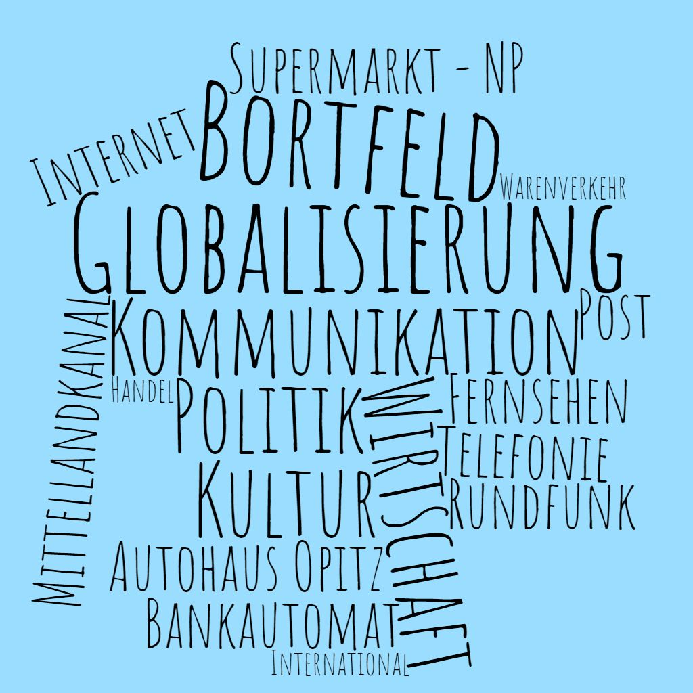
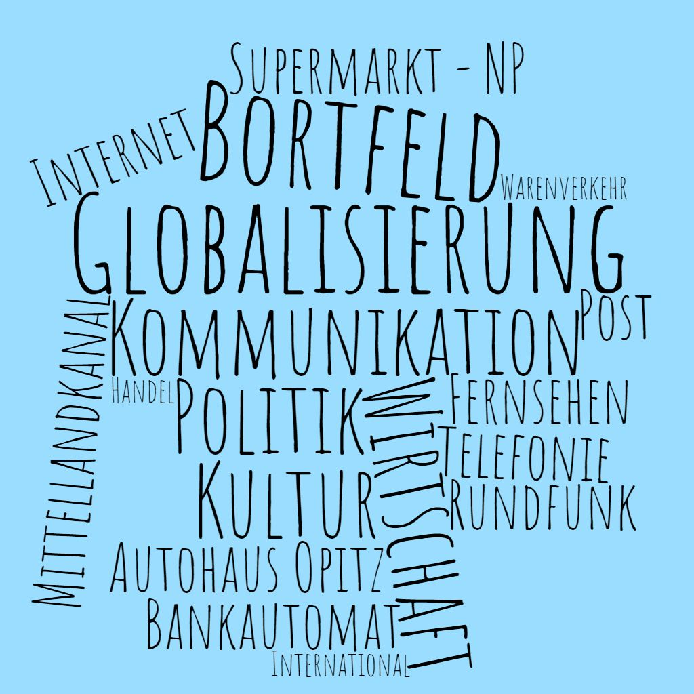
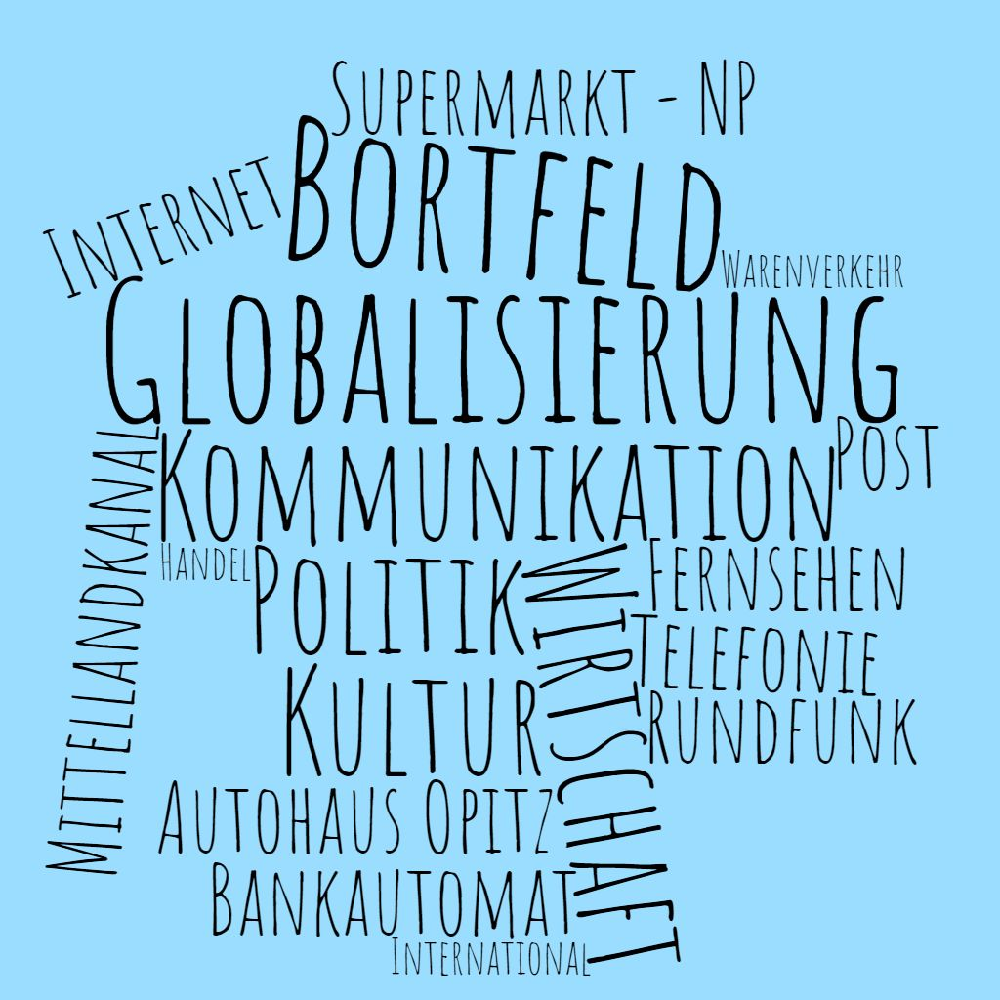
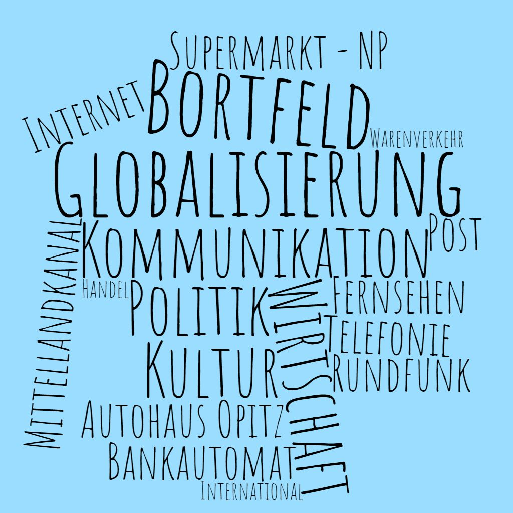

Diese Website ist nicht für die komerzielle Nutzung bestimmt.
Sie ist auschlißlich für die schulische Nutzung bestimmt.
Sie wurde und wird auch nicht veröffentlicht.
Keine Garantie, dass diese Website unter anderen Betriebssystemen als Windows 10 sicher und zuverlässig läuft.
Isabel Reinema
Vincent Volckmar
Bilder in den Artikeln: Isabel Reinema, Vincent Volckmar
Wappen von Bortfeld, Karte von der Gemeinde Wendeburg: Wikipedia
Karte von Bortfeld: Gemeinde Wendeburg
Verlauf des Mittelandkanals: Wikipedia
Wort Wolke: Erstellt mit Wortwolken
Sonstige Bilder: Pixabay
Lehrbuch: Diercke Erdkunde 9/10 Gymnasium Niederachsen G9
Homepage der Gemeinde Wendeburg
Wikipedia (Bortfeld)
Wikipedia (Mittellandkanal)